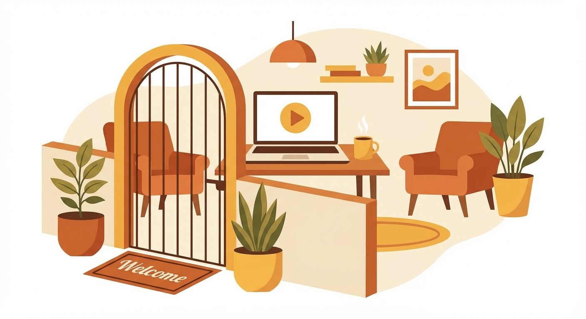

1
Welcome to The Ecom Clubhouse

Print on Demand (การพิมพ์ตามสั่ง) คืออะไร? — คือธุรกิจที่เราออกแบบลายสินค้า แล้วเมื่อลูกค้าสั่งซื้อ ผู้ผลิตจะพิมพ์ บรรจุ และจัดส่งให้ลูกค้าแทนเราทั้งห...
ประเด็นสำคัญ (Key Takeaways)
- Print on Demand (การพิมพ์ตามสั่ง) = ธุรกิจที่ไม่ต้องสต็อกสินค้า ผู้ผลิตจัดการพิมพ์ แพ็ค ส่งให้ทั้งหมด
- คอร์สแบ่งเป็น 6 ขั้นตอนชัดเจน: เข้าใจธุรกิจ → สร้างดีไซน์ → เปิดร้าน → เพิ่มยอดขาย → สร้างทราฟฟิก → ขยายร้าน
- ร้านทำงานแบบ Autopilot (ระบบอัตโนมัติ) — Printify จัดการพิมพ์และส่ง แพลตฟอร์มส่ง Tracking ให้ลูกค้า
- ใช้ทั้ง Etsy (ตลาดออนไลน์มีคนเข้าเยอะ) และ Shopify (ร้านส่วนตัวเก็บข้อมูลลูกค้าได้) เพื่อกระจายรายได้
- ตลาด Print on Demand ทั่วโลกมูลค่ากว่า 10,000 ล้านดอลลาร์ คาดเติบโตเกือบ 3 เท่าภายในปี 2032